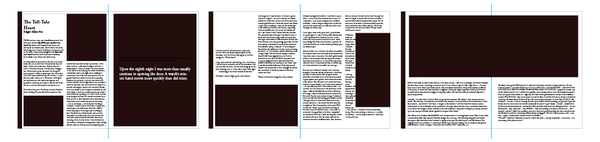
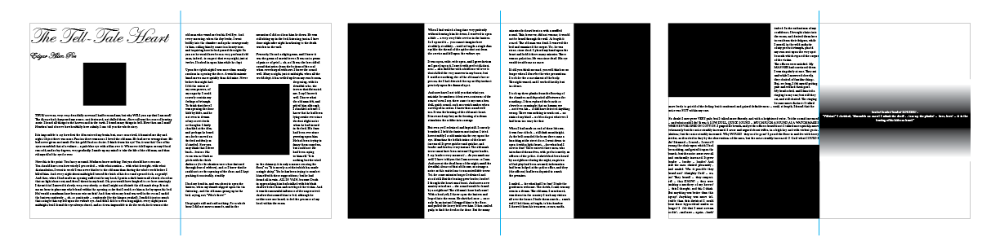

Initial Wireframes
I played around with a few different layouts of text and images (as seen with the black boxes) before selecting exactly which images I would use. It was important for me to first understand the relationship of the space and size of these aspects. I was able to select my favorite few page designs for the final layout.

